系统要求：
操作系统：Windows 7 SP1 / 8.1 / 10/2012 R2 / 2016（x64）
CPU：2.4GHz或更高
RAM：4GB或更高（64位）
显示器：支持1280 x 1024（或更高）分辨率，并具有24位或更高的色彩
PTC Creo 8.0中文破解版安装教程
1、点击顶部下载，得到PTC-Creo8.0.1中文原程序和_SolidSQUAD_破解许可文件；
2、首先解压_SolidSQUAD_.7z，得到PTC.LICENSE.WINDOWS.2021-03-11-SSQ、Creo8.0.0.0和SolidSQUADLoaderEnabler.reg注册文件；
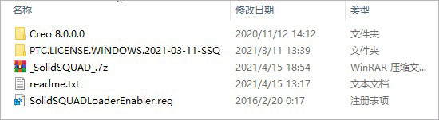
3、打开PTC.LICENSE.WINDOWS.2021-03-11-SSQ文件夹，右键管理员身份运行FillLicense.bat，会自动生成许可证文件PTC_D_SSQ.dat；
提示：弹出如下黑色命令窗口，看到提示：请按任意键继续
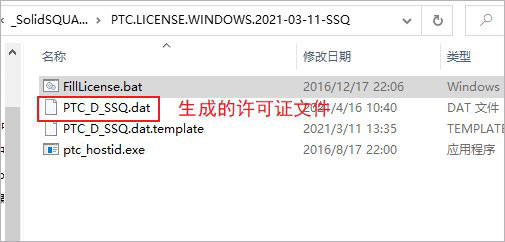
4、将许可证文件PTC_D_SSQ.dat复制到一个指定位置，比如C:\ProgramFiles\PTC（可以先创建这个路径）
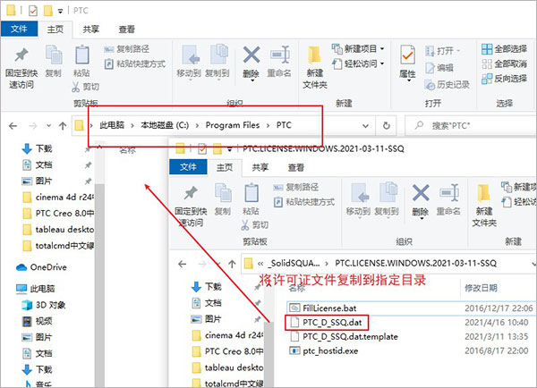
5、再设置系统环境变量，依提示操作：
右键我的电脑―>属性―>高级系统设置
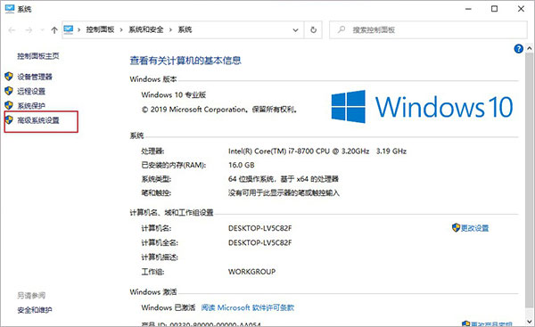
点击环境变量，开始创建系统环境变量
变量名：PTC_D_LICENSE_FILE
变量值：指向PTC_D_SSQ.dat【如：C:\ProgramFiles\PTC\PTC_D_SSQ.dat】
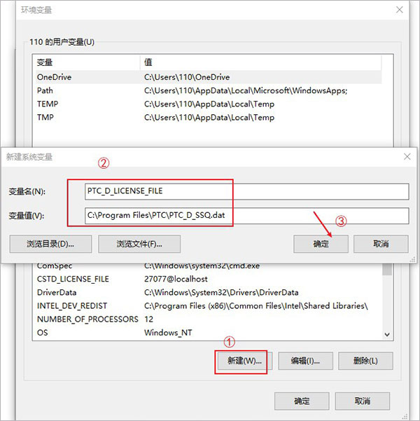
6、用虚拟光驱加载PTCCreo8.0.0.0Win64.iso镜像文件，如果是win10系统，可以右击以windows资源管理器打开；
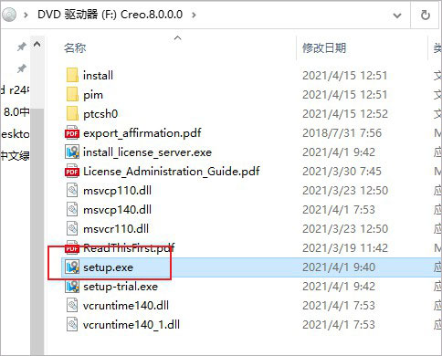
7、双击Setup.exe开始安装软件；
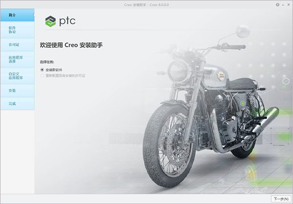
8、安装程序会自动识别已设置好的许可证；
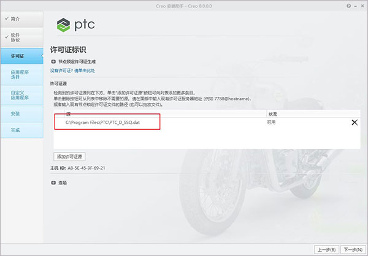
9、根据需要选择要安装的程序以及安装目录，开始进行安装；
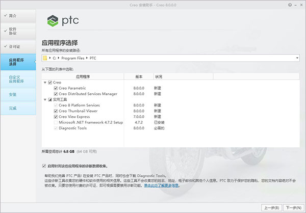
10、软件正在安装中，请用户耐心等待一小会；
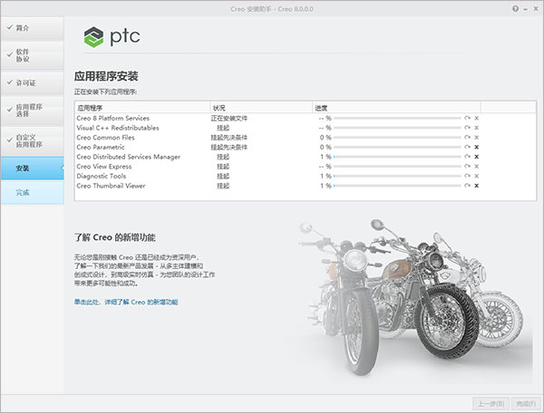
11、直到显示安装完成，退出安装向导；
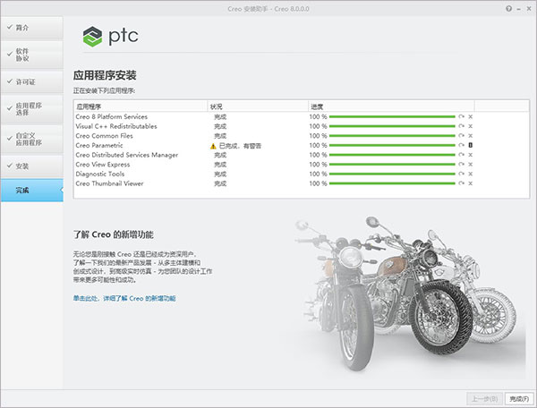
12、将Creo8.0.0.0文件夹复制到软件安装目录下替换即可；
默认目录【C:\ProgramFiles\PTC】
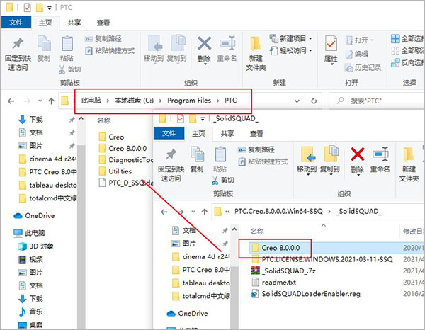
13、最后双击SolidSQUADLoaderEnabler.reg导入注册表；
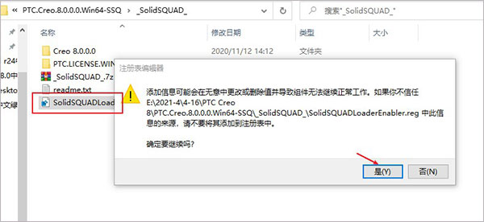
14、打开软件即可看到成功激活，以上就是ptccreo8.0中文破解版的详细安装教程。
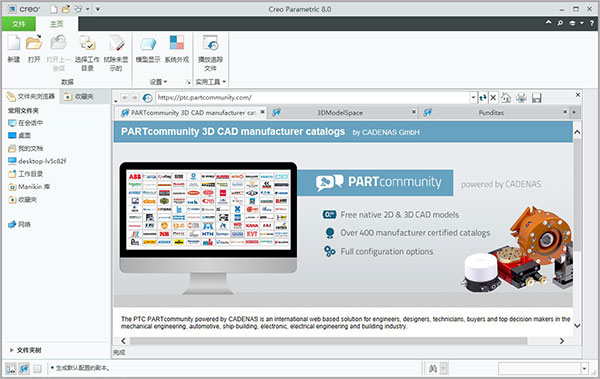
ptccreo8.0新功能介绍
一、可用性和效率
Creo8工具助您充分挥洒创意，更快完成设计。工作流经过简化，操控板得到改进，同时模型树界面和快照便于轻松查看设计草稿。孔特征、路由系统、钣金件和RenderStudio均得到改善，让您顺畅工作，效率倍增。现在您可以利用不可分组件来更加轻松地管理采购的组件。
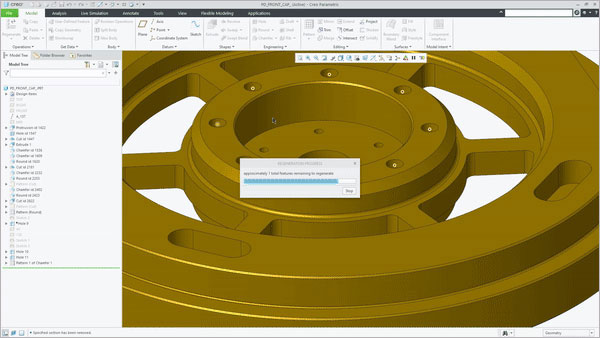
二、改进了基于模型的定义(MBD)和细节设计
新增了功能完善的MBD和细节设计工具，可帮助您创建详实的CAD模型，为制造、检查和供应链提供强大依据。 Creo8简化了工作流，可减少用时、错误和成本，同时提高企业整体质量。您现在可以借助更新的GD&TAdvisorPlus扩展功能为组件应用几何尺寸和公差标注。此外，细节设计功能也得到了加强，新增了草绘工具，可轻松传达设计意图。
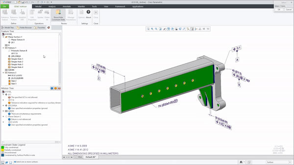
三、增强了仿真和创成式设计
帮助您利用先进的CAD技术，以十足创意进行优质设计。Creo先进的创成式设计工具具有自动包络、绘制处理和半径约束功能，变得更为强大。CreoSimulationLive的增强功能提供稳态流分析，可在设计过程中进行实时仿真。全新的CreoAnsysSimulation工具改进了网格和挠度控制，可进行高保真设计验证。
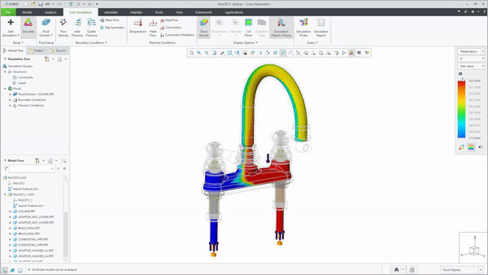
四、改进了增材制造和减材制造
借助Creo8，您可轻松为增材制造和传统制造优化设计。借助全新的增材制造功能，您可以使用高级晶格结构来充分减轻重量。您可以根据仿真结果应用多种晶格结构。构建方向和托盘设置方面的增强可以加快生产速度，提高构建质量。 对于减材制造，Creo8简化了高速五轴铣削刀具路径，成功缩短了设置和加工时间。